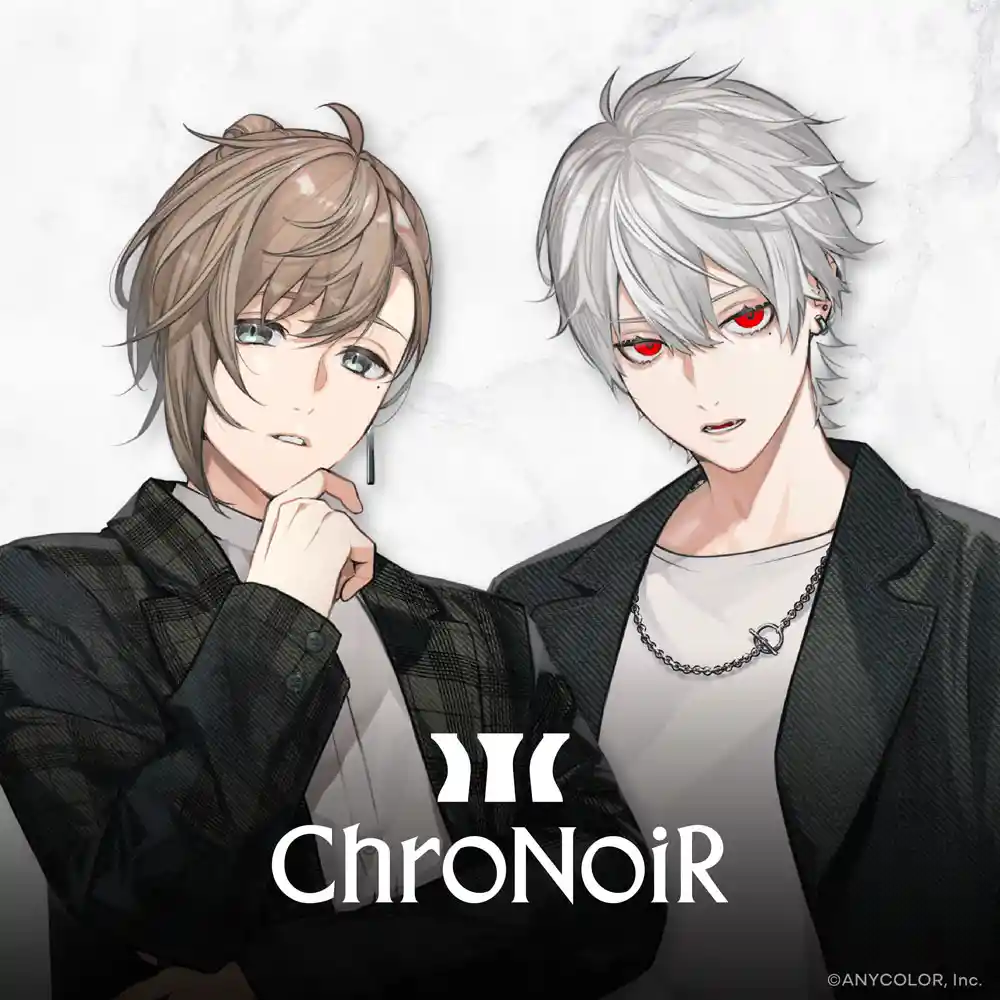
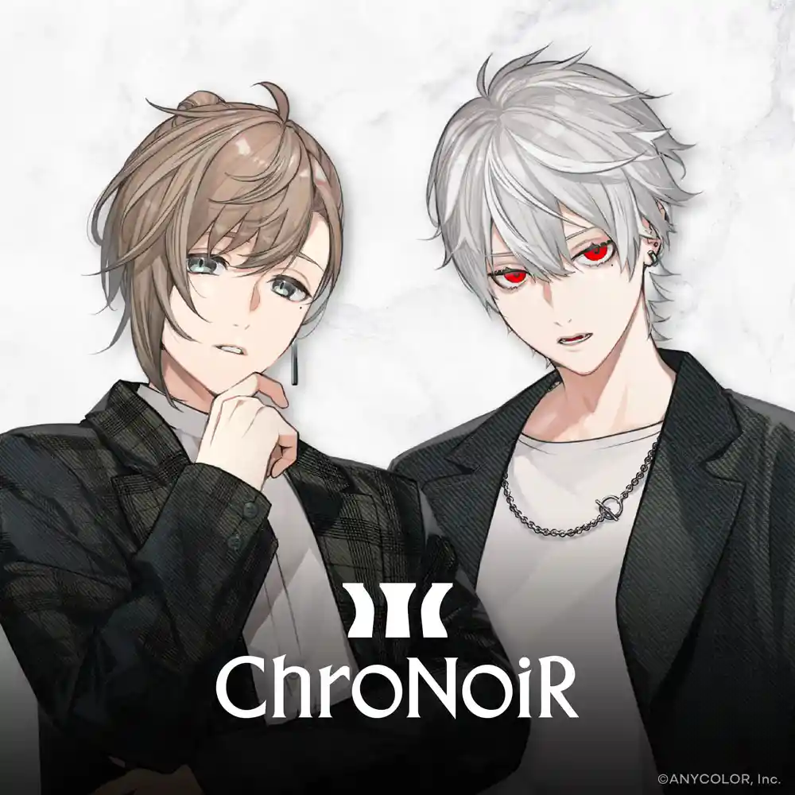

にじさんじおすすめライバー！
にじさんじ所属おすすめライバー！紹介
ChroNoiR（クロノワール）
ChroNoiR（クロノワール）とは？
ChroNoiR（クロノワール）は、ANYCOLOR株式会社が開発・運営するバーチャルライバーグループ・にじさんじに所属する、日本のバーチャルライバーユニット。 通称は「くろのわ」。2018年7月17日に結成された。葛葉と叶のユニット名はChroNoiR（クロノワール）です。



にじさんじ所属おすすめライバー！紹介
ChroNoiR（クロノワール）
ChroNoiR（クロノワール）は、ANYCOLOR株式会社が開発・運営するバーチャルライバーグループ・にじさんじに所属する、日本のバーチャルライバーユニット。 通称は「くろのわ」。2018年7月17日に結成された。葛葉と叶のユニット名はChroNoiR（クロノワール）です。
